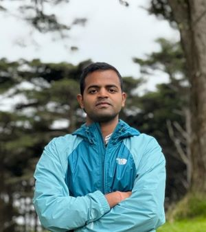

Siddharth Singh
Postdoctoral Researcher at Oak Ridge National Lab

Hello, I am Siddharth. I am a Postdoctoral Researcher in the Robotics Automation & Controls Group at the Manufacturing Science Division of the Oak Ridge National Lab. I finished my Ph.D in the Mechanical & Aerospace Engineering Department at the University of Virginia. My research focuses on robotics and learning. The emphasis of my research is to make robots more reliable and safer to operate in industrial environments.
Prior to that, I completed my M.S.E. in Mechanical Engineering and Applied Mechanics from the University of Pennsylvania (2018). I earned my B.E. in Manufacturing Process & Automation Engineering from Netaji Subhas Institute of Technology, New Delhi, India (2014).
Research
My research aims to bring more generalizable robotics and automation systems to the real world, specifically in manufacturing settings. I focus on combining learning-based methods (RL, BC, IL, DDPM, etc.) with analytical methods (DMPs, MPC, etc.). My goal is to build methods that are easy to develop, safe, and reduce data dependency.
My background can be categorized in three parts:
- Developing learning based methods to achieve complex and intricate real-world tasks
- Designing and building physical robotic/design systems
- Creating and fabricating novel mechatronic components and mechanisms
I have led and contributed to diverse projects, from developing a solar electric vehicle, to deploying navigation stacks for multi-robot teams, to designing learning frameworks that transfer human expertise to robots for better decision-making. Across these experiences, I have cultivated a broad skill set—ranging from CAD, mechanical fabrication, control theory, motion planning, and learning-based methods.
My long-term vision is to advance large-scale robotic solutions in manufacturing by reducing the cost of robot programming, enhancing online decision-making, and minimizing the need for human supervision.
Beyond research, I enjoy playing badminton, cricket, and anything+everything related to cars.